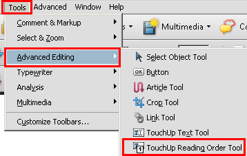
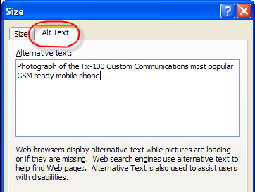

Applying text alternatives to images with the Alt entry in PDF documents
Description
The objective of this technique is to provide text alternatives for
images via an /Alt entry in the property list for a Tag. This is normally
accomplished using a tool for authoring PDF.
PDF documents may be enhanced by providing alternative descriptions
for images, formulas, and other items that do not translate naturally
into text. In fact, such text alternatives are required for accessibility:
alternate descriptions are human-readable text that can be vocalized
by text-to-speech technology for the benefit of users with vision disabilities.
When an image contains words that are important to understanding the
content, the text alternative should include those words. This will
allow the alternative to accurately represent the image. Note that
it does not necessarily describe the visual characteristics of the
image itself but must convey the same meaning as the image.
Examples
Example 1: Adding an /Alt entry to an image using Adobe Acrobat
9 Pro's TouchUp Object Tool
This example is shown with Adobe Acrobat Pro. There are other software tools that
perform similar functions. See the list of other software tools in .
Example 2: Adding an /Alt entry to an image using Adobe Acrobat
9 Pro's TouchUp Reading Order Tool
This example is shown with Adobe Acrobat Pro. There are other software tools that
perform similar functions. See the list of other software tools in .
Choose Tools > Advanced Editing > TouchUp Reading Order
Tool

Figure 3The TouchUp Reading Order Tool in the Advanced Editing menu.
The TouchUp Reading Order dialog will be displayed.
Right-click on the image and choose Edit Alternate Text.
The Alternate Text dialog will be displayed.
Type the text alternative in the Alternate Text text box.
Figure 4The Alternate Text box.
Example 3: Adding an /Alt entry to an image in PDF documents generated
using Microsoft Word
This example is shown with Microsoft Word. There are other software tools that perform
similar functions. See the list of other software
tools in .
Word 2000-2003
Right-click on the image and choose Format Picture
Select the Web tab
Type the alternative text into the text box provided and then
click OK.
Figure 5The Web tab in the Format Picture dialog.
Word 2007
Right-click on the image and choose Size
Select the Alt Text tab
Type the alternative text into the text box provided and then
click OK.

Figure 6The Alt Text tab in the Size dialog.
Example 4: Adding an /Alt entry to an image in PDF documents generated
using OpenOffice.org Writer 2.2
This example is shown with Open Office.org Writer. There are other software tools
that perform similar functions. See the list of other software
tools in .
Access the context menu for the image and choose Picture...
Select the Options tab
Type the alternative text into Alternate (Text Only) text box
and click OK.
Figure 7The Options tab in the Picture... dialog.
Example 5: Adding a text alternative to an image in a PDF document
using an /Alt entry
The /Alt property used on an image of mountains with a moon and trees
typically would be used like this (typically accomplished by an authoring
tool):
/Figure <</Alt (Sketch of Mountains with moon rising over trees) >>
The image might also be represented by a tag with a different name.
A different name might be used because the tag name is written in
a language other than English or because a specific tool uses a different
name for some other reason. In this situation, it is also necessary
that the RoleMap contained within the StructTreeRoot for the PDF
document contain an entry which explicitly maps the name of the tag
used for the image with the standard structure type used in PDF documents
(in this case, Figure). If the RoleMap contains only an entry mapping
Shape tags to Figure tags, the rolemap information would appear as
follows:
/RoleMap << /Shape /Figure >>
In this case, the usage of the /Alt entry as follows would also
be correct:
/Shape <</Alt (Crater Lake in the summer, with the blue sky, clouds and crater walls perfectly reflected in the lake) >>
Note that the /Alt entry in property lists can be combined with
other entries.
Resources
Resources are for information purposes only, no endorsement implied.
Verify the images have /Alt entries on
an enclosing tag by one of the following:
Read the PDF document with a screen reader, listening to hear
that the equivalent text is read when tabbing to the non-text
object (if it is tabbable) or hearing the alternative text read
when reading the content line-by-line.
Using a PDF editor, check that a text alternative is displayed for each
image.
Use a tool which is capable of showing the /Alt entry value,
such as aDesigner, to open the PDF document and view the GUI
summary to read the text alternatives for images.
Use a tool that exposes the document through the accessibility
API and verify that images have required text equivalents.